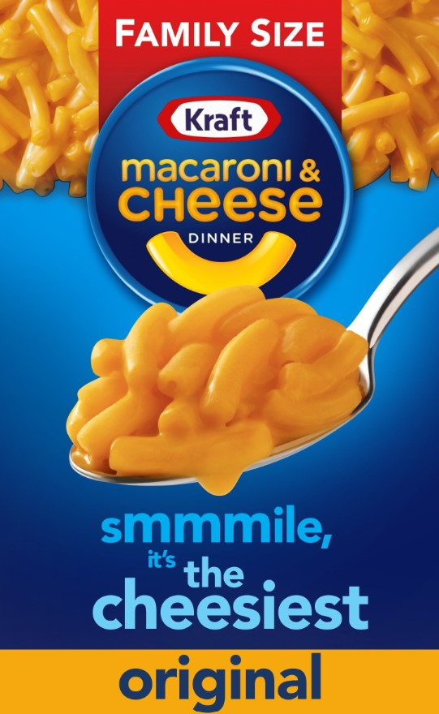

Mac And Cheese

Yummy Mac And Cheese
Ingredients
- A box of Kraft's Maraoni and Cheese
- Macaroni Water
Directions
- Boil Macaroni Water in a sauce pan.
- Open the Mac And Cheese Box...take out cheese packet (very important).
- Pour macaroni into the boiling Macaroni Water.
- Set timer for 9 minutes.
- When timer goes off check to see if macaroni is cooked by spooning a single mac out of the sauce pan. Blow on it so it isn't too hot.
- Repeat checking for doneness until done.
- Pour sauce pan into strainer and shake it around until all the Macroni Water is gone.
- Pour the drained macaroni back into the sauce pan.
- With a pair of scissors, cut off the top of the cheese packet.
- Pour the cheese packet contents into the sauce pan and stir briskly
- Eat out of the sauce pan for that true Black Hawk experience.